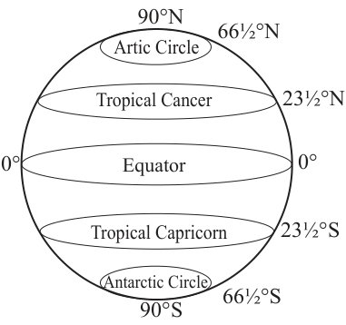

Parallels and meridians
Position of a place on the earth’s surface can be found by using parallels and meridians. Traveling on the planet Earth by air, land or waterways needs knowledge of the distance, direction, and position of places you want to go. Also, in order for people to perform different activities, they need enough knowledge of the places where the activities are to be performed. Therefore, it is important to study about parallels and meridians which are imaginary lines that create a coordinate system on the earth’s surface, aiding in locating specific points and defining geographical positions.
Activity 3.8
 Activity 3.8
Activity 3.8(a) Take a ball and draw a horizontal line that divides the ball into two equal halves, the hemispheres.
(b) Draw another line that divides the ball into two equal halves, vertically connecting top and bottom sides of the ball.
(c) Add more lines that circle the ball horizontally and vertically.
(d) Name the horizontal and vertical lines you have drawn in relation to parallels and meridians.
(a) Latitudes
Latitudes also known as or parallels are imaginary lines parallel to the Equator joining all the places at an equal angular measurement. The equator divides the Earth into two equal parts called hemispheres. The two hemispheres are the Northern Hemisphere and the Southern Hemisphere. The North Pole has a latitude of 90° North, and the South Pole has a latitude of 90° South (Figure 3.11).
The most common parallels are the Equator (0°), the Tropic of Cancer (23½° N), the Tropic of Capricorn (23½° S), the Arctic Circle (66½° N), the Antarctic Circle (66½° S).

(b) Longitudes
Longitudes are also known as meridians. They are angular distance measured in degrees West or East of the Prime Meridian. They are imaginary lines which run from the North Pole to the South Pole East or West of the Greenwich meridian (0°). The Greenwich meridian is the prime meridian which passes through the Greenwich Observatory Station near London where it derives its name. In Africa, it passes through Accra in Ghana.
The prime meridian divides the earth into East and West. Since there are 360° in the sphere, meridians of 0° to 180° lie east of the Greenwich meridian and the other 0° to 180° west of Greenwich. Meridians are also characterised by the lines of uniform length, and the width between lines decreases as